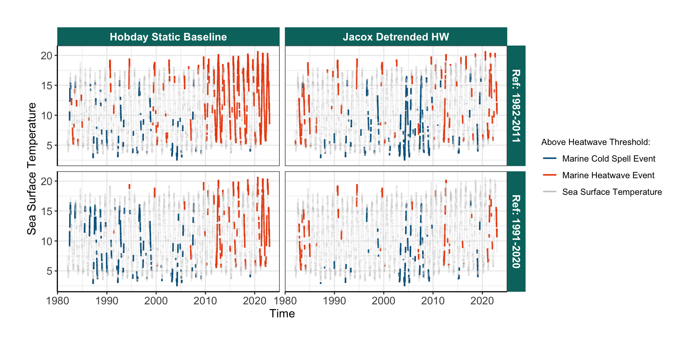
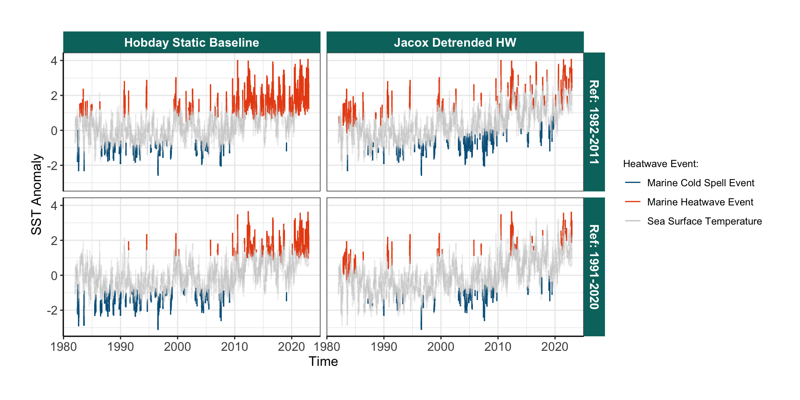
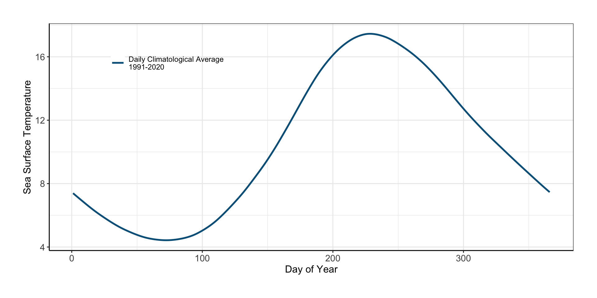

Shifting Baselines
Gulf of Maine Marine Heatwaves
Communication of “Extreme Events” & a Changing Climate.
The impacts of changing the reference period and/or de-trending on how we categorize “extreme events”.
Defining Marine Heatwave Events (MHW)
Marine heatwaves have traditionally defined using the Hobday et al. definition:
A marine heatwave is defined a when seawater temperatures exceed a seasonally-varying threshold (usually the 90th percentile) for at least 5 consecutive days. Successive heatwaves with gaps of 2 days or less are considered part of the same event.
Setting MHW Thresholds
Using this definition:
MHW events result when a daily SST measurement falls beyond some threshold. This threshold is set using some climate baseline.
The standard baseline we have used is 30-years: 1982-2011.
Distribution of the Data:
Thresholds from the Distribution:
Tracking “Events” in Time
Thresholds are smoothed with a moving average to get a seasonally varying heatwave/coldspell thresholds.
Shifting the Baseline
The major criticism of this approach is that the reference period is static, and thresholds do not track long-term trends.
Impacts from Changing the Baseline
If we merely change the baseline, our point of reference for anomalies and heatwaves changes:
Jacox Approach: De-trending Anomalies
For the detrended analysis, we removed linear trends over the 1991–2020 period from the observed SST anomalies and the lead-time-dependent forecast SST anomalies at each grid cell.
Mike Jacox & Vincent Saba Process:
Calculate recent climatology (e.g., last 30 years)
Calculate anomalies
Detrend anomalies
Calculate thresholds
Identify MHWs
Jacox Questions:
1. Calculate recent climatology (e.g., last 30 years)
- Calculate anomalies
3. Detrend anomalies - Why not just temperature? (answer: confusing to match them to thresholds)
- Calculate thresholds
5. Identify MHWs - Won’t these change retroactively?
Comparing the Four Options:
Four Methods: Temperature
Four Methods: Anomalies
Full Workflow:
1. Calculate Climatology
2. Calculate Anomalies
3. De-trend Anomalies

4. Calculate Thresholds
5. Identify MHW’s

Full Workflow
The pull_heatwave_events function used in the warming report:
#' @title Pull Marine Heatwave and cold Spell Events from Timeseries
#'
#' @description Pull both heatwave and cold spell events using same threshold and return
#' as single table. Wrapper function to do heatwaves and coldwaves simultaneously at 90%
#' or custom threshold
#'
#' Option to de-trend anomalies at annual scale in accordance with Jacox et al. methodology. Default
#' is not de-trended and uses a statid climate reference period following the methods of hobday et al.
#'
#' @param temperature_timeseries timeseries dataframe with date and sst values
#' @param clim_ref_period start and end dates to use when calculating the climate reference
#' period c("yyyy-mm-dd", "yyyy-mm-dd")
#' @date_col String indicating the column to use for dates
#' @temp_col String indicating the column to de-trend
#' @param threshold percentile cutoff for indicating a heatwave/coldspell event
#' @param detrend TRUE/FALSE Whether to de-trend anomalies prior to event detection, default is FALSE.
#'
#' @return
#' @export
#'
#' @examples
pull_heatwave_events <- function(temperature_timeseries,
clim_ref_period = c("1982-01-01", "2011-12-31"),
date_col = "time",
temp_col = "sst",
threshold = 90,
detrend = FALSE) {
# temperature_timeseries <- gom_sst
# Pull the two column dataframe for mhw estimation
test_ts <- data.frame(t = as.Date(temperature_timeseries[[date_col]]),
temp = temperature_timeseries[[temp_col]])
# Calculate seasonally varying climatology with threshold w/ smoothing window
ts <- heatwaveR::ts2clm(data = test_ts,
climatologyPeriod = clim_ref_period,
pctile = threshold) %>%
mutate(sst_anom = temp - seas,
yr = lubridate::year(t))
# Perform linear detrending on anomalies
if(detrend){
# Detrend day of year temperature trends:
ts <- ts %>%
split(.$doy) %>%
map_dfr(detrend_sst, vals = "sst_anom", yr_col = "yr") %>%
mutate(detrend_temp = seas + detrend_vals) %>%
arrange(t)
}
# Perform Heatwave Detection
mhw <- ifelse(detrend,
heatwaveR::detect_event(ts, x = t, y = detrend_temp),
heatwaveR::detect_event(ts, x = t, y = temp))
# Select and rename critical heatwave data
mhw_out <- mhw[[1]] %>%
#mutate(sst_anom = temp - seas) %>%
rename(time = t,
sst = temp,
mhw_thresh = thresh,
mhw_threshCriterion = threshCriterion,
mhw_durationCriterion = durationCriterion,
mhw_event = event,
mhw_event_no = event_no)
# Repeat for cold spells
# 2. Detect cold spells
# coldSpells = TRUE flips boolean to < thresh
ts <- ts2clm(data = test_ts,
climatologyPeriod = clim_ref_period,
pctile = (100 - threshold)) %>%
mutate(sst_anom = temp - seas,
yr = lubridate::year(t))
# Perform linear detrending on anomalies
if(detrend){
# Detrend day of year temperature trends:
ts <- ts %>%
split(.$doy) %>%
map_dfr(detrend_sst, vals = "sst_anom", yr_col = "yr") %>%
mutate(detrend_temp = seas + detrend_vals) %>%
arrange(t)
}
# Perform Cold Spell Detection
mcs <- ifelse(detrend,
heatwaveR::detect_event(ts, x = t, y = detrend_temp, coldSpells = T),
heatwaveR::detect_event(ts, x = t, y = temp, coldSpells = T))
# Prepare cold spell data to join
# Remove columns that are shared with heatwaves
mcs_out <- mcs[[1]] %>%
dplyr::select(time = t,
mcs_thresh = thresh,
mcs_threshCriterion = threshCriterion,
mcs_durationCriterion = durationCriterion,
mcs_event = event,
mcs_event_no = event_no)
# join heatwave detection results to coldspell results
hot_and_cold <- left_join(mhw_out, mcs_out, by = "time")
# 3. Data formatting for plotting,
# adds columns to plot hw and cs seperately
events_out <- hot_and_cold %>%
mutate(
# Set up status to combine labelling for heatwaves and cold spells:
status = ifelse(mhw_event == TRUE, "Marine Heatwave Event", "Sea Surface Temperature"),
status = ifelse(mcs_event == TRUE, "Marine Cold Spell Event", status),
event_type = ifelse(detrend, "Jacox Method", "Hobday Method"),
# Corrective measures for where event flagging is off:
# status = ifelse(sst > mhw_thresh, "Marine Heatwave Event", status),
# status = ifelse(sst < mcs_thresh, "Marine Cold Spell Event", status),
# Heatwave event temperature values:
hwe = ifelse(mhw_event == TRUE, sst, NA),
cse = ifelse(mcs_event == TRUE, sst, NA),
nonevent = ifelse(mhw_event == FALSE & mcs_event == FALSE, sst, NA))
# Close the gaps between a mhw event and sst (might not need if full line for temp exists)
events_out <- events_out %>%
mutate(hwe = ifelse( (is.na(hwe) & is.na(lag(hwe, n = 1))) == FALSE, sst, hwe),
cse = ifelse( (is.na(cse) & is.na(lag(cse, n = 1))) == FALSE, sst, cse)) %>%
distinct(time, .keep_all = T)
return(events_out)
}Fixed Baseline Heatmaps
:::